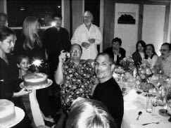

Birinci Raunt
Memento Mori

Elli yaşındayken (ortada), Laurene Powell Eve’i tutuyor,
Eddy Cue, John Lasseter (fotoğraf makineli) ve Lee Clow (sakallı).
Kanser
Jobs kanser olmasını 1997’den itibaren hem Apple’ı, hem Pixar’ı yönetirken çok yıpranmasına yoracaktı sonradan. İki şirket arasında koştururken böbrek taşları gibi rahatsızlıklar yaşamıştı ve eve geldiğinde neredeyse konuşamayacak kadar yorgun oluyordu. “Bu kanser o zaman başladı herhalde, çünkü o sıralar bağışıklık sistemim epey zayıftı,” dedi.
Yorgunluğun veya bağışıklık sisteminin zayıflığının kansere yol açtığının kanıtı yok. Ama böbrek sorunları kanserinin tespit edilmesini dolaylı yoldan sağladı. Kendisini tedavi eden ürologla Ekim 2003’te karşılaştığında kadın ondan böbrekleriyle üreterinin bilgisayarlı tomografisini istedi. Jobs beş yıldır tomografi çektirmiyordu. Yeni tomografide böbreklerinde terslik çıkmadı, ama pankreasında bir gölge vardı, dolayısıyla ürolog ona pankreasını muayene ettirmesini söyledi. Jobs bunu yapmadı. Üstünde düşünmek istemediği verileri göz ardı etmekte iyiydi her zamanki gibi. Ama kadın ısrar etti. “Steve, bu gerçekten önemli,” dedi birkaç gün sonra. “Muayene olman gerek.”
Kadının sesi Jobs’ı harekete geçirecek kadar telaşlıydı. Jobs bir sabah erkenden muayeneye gitti ve doktorlar tomografiyi inceledikten sonra onunla görüşüp kötü haberi verdiler, pankreasında tümör olduğunu söylediler. Hatta bir tanesi hayatındaki yarım kalmış işleri tamamlamasını tavsiye etti; Jobs’ın sadece birkaç aylık ömrü kaldığını söylüyordu kibarca. O akşam boğazından bağırsaklarına endoskop indirerek pankreasındaki tümörden iğneyle birkaç hücre aldılar. Powell kocasının doktorlarının sevince kapıldıklarını anımsıyor. Tümörün bir islet hücre ya da pankreatik nöroendokrin tümörü olduğu anlaşıldı, ki bunlar nadir görülür ama daha yavaş büyüdüklerinden tedavileri daha mümkündür. Jobs tümör o kadar erken -rutin bir böbrek muayenesi sırasında- keşfedildiği için şanslıydı; tümör yayılmadan ameliyatla alınabilirdi.
İlk aradığı kişilerden biri, Hindistan’daki aşramda tanıştığı Larry Brilliant oldu. “Hâlâ Tanrı’ya inanıyor musun?” diye sordu Jobs ona. Brilliant inandığını söyleyince Hindu guruları Neem Karoli Baba’nın öğrettiği, Tanrı’ya giden çeşitli yollardan bahsettiler. Sonra Brilliant Jobs’a sorunun ne olduğunu sordu. “Kanserim,” diye karşılık verdi Jobs.
Apple yönetim kurulunda olan Art Levinson’ın, kendi şirketi Genentech’in yönetim kurulu toplantısında başkanlık yaparken cep telefonu çaldı ve ekranda Jobs’ın ismi belirdi. Levinson ara verilir verilmez Jobs’ı geri aradı ve tümör haberini aldı. Kanser biyolojisi konusunda bilgiliydi ve firması kanser ilaçları üretiyordu, dolayısıyla Jobs’ın danışmanı haline geldi. Kendisi de prostat kanserini yenmiş olan Intel’den Andy Grove da aynı şekilde gönüllü danışman oldu. Jobs o Pazar günü onu arayınca Grove Jobs’ın evine gelip iki saat kaldı.
Jobs kabul gören tek tıbbi yaklaşımı, yani tümörün ameliyatla alınmasını reddederek arkadaşlarıyla karısını dehşete düşürdü. “Vücudumu kesip açmalarını hiç istemiyordum, bu yüzden başka birkaç şey denedim,” diye anımsıyordu biraz pişmanlıkla, yıllar sonra benimle konuşurken. Katı bir vegan diyetine başladı, bol bol taze havuçla meyve suyu tüketti. Bu rejime akupunkturu, çeşitli şifalı otları ve arada sırada internette rastladığı ya da ülkenin dört bir tarafındaki, danıştığı insanların (bir medyum da dahil olmak üzere) bahsettiği tedavileri ekledi. Güney California’da bir doğal tedavi kliniğini işleten ve organik bitkilerin, meyve suyu oruçlarının, bağırsakları sık sık temizlemenin, hidroterapinin ve her türlü negatif hissi ifade etmenin önemini vurgulayan bir doktordan etkilendi bir süre.
“Temel mesele vücudunun kesilip açılmasına gerçekten hazır olmamasıydı,” diye anımsıyordu Powell. “İnsanı böyle bir şeye ikna etmek güçtür.” Yine de denedi. “Vücut ruha hizmet için vardır,” iddiasında bulundu. Arkadaşları Jobs’a ameliyat olmasını ve kemoterapi tedavisi görmesini söylediler ısrarla. “Steve kendini iyileştirmek için at boku, at boku kökü gibi şeyler yemeye çalıştığı sıralarda benimle konuştu ve ona deli olduğunu söyledim,” diye anımsıyordu Grove. Levinson Jobs’a “her gün yalvardığını” ve “onunla iletişim kuramamanın son derece can sıkıcı olduğunu” söyledi. Tartışmaları yüzünden arkadaşlıkları bitecekti neredeyse. Jobs diyet tedavilerinden bahsedince Levinson “Kanser öyle bir şey değildir,” diyordu ısrarla. “Ameliyat olmadan ve onu toksik kimyasallar bombardımanına tutmadan kurtulamazsın.” Beslenmeye dayalı alternatif tedavi yöntemlerinde çığır açmış diyet doktoru Dean Ornish bile Jobs’la uzun bir yürüyüşe çıktı ve bazen modern tıbbın en doğru seçenek olduğunu ısrarla anlatmaya çalıştı. “Gerçekten ameliyata ihtiyacın var,” dedi Ornish ona.
Jobs Ekim 2003’te teşhis konmasından sonra dokuz ay direndi. Bunun bir sebebi gerçekliği çarpıtma sahasının karanlık tarafıydı. “Bence Steve dünyanın belirli bir şekilde olmasını öyle çok istiyor ki, dünyayı iradesiyle öyle kılmaya çalışıyor,” diye yorumda bulundu Levinson. “Bazen işe yaramıyor. Gerçeklik amansız.” Jobs’ın muhteşem odaklanma yeteneğinin olumsuz tarafı, uğraşmak istemediği şeyleri filtrelemeye korkutucu bir şekilde hevesli olmasıydı. Bu pek çok büyük başarısını mümkün kılsa da ters tepebilirdi. “Yüzleşmek istemediği şeyleri görmezden gelme yeteneğine sahip,” diye açıkladı karısı. “Mizacı öyle.” Jobs ailesi ve evliliğiyle ilgili kişisel meselelere, mühendislik ve ticari sorunlarla ilgili mesleki meselelere, sağlık ve kanserle ilgili meselelere sırtını dönüveriyordu bazen.
Karısının “sihirli düşünüş” dediği şeyin – yani dünyayı iradesiyle istediği şekle sokabileceği varsayımının ödülünü aldığı zamanlar olmuştu. Ama bu yaklaşım kanserde işe yaramıyordu. Powell onun fikrini değiştirmek için, kız kardeşi Mona Simpson dahil olmak üzere çevresindeki herkesin yardımına başvurdu. Nihayet Temmuz 2004’te Jobs’a tümörün büyüdüğünü ve muhtemelen yayıldığını gösteren bir tomografi gösterildi. Bunun üzerine Jobs gerçeklikle yüzleşmek zorunda kaldı.
31 Temmuz 2004 Cumartesi günü Stanford Üniversitesi Tıp Merkezi’nde ameliyat oldu. “Whipple prosedürü”, yani pankreasın yanı sıra midenin büyük bir bölümüyle bağırsağın bir kısmının alınması işlemi tam anlamıyla uygulanmadı. Doktorlar bu prosedürü uygulamayı düşündülerse de sonunda daha az radikal bir yaklaşımda, modifiye bir Whipple’da karar kılarak pankreasın bir kısmını aldılar sadece.
Jobs ertesi gün çalışanlarına bir e-posta göndererek -hastane odasındaki PowerBook’unu kullandı-, ameliyat olduğunu haber verdi. Onları kendisindeki pankreas kanseri tipinin “her sene teşhis edilen pankreas kanseri vakalarının aşağı yukarı %1’ini teşkil ettiği ve zamanında (benimki gibi) saptanırsa cerrahi operasyonla iyileştirebildiği” konusunda temin etti. Kemoterapi veya radyasyon tedavisi görmesine gerek olmadığını ve Eylül başında işe geri dönmeyi planladığını söyledi. “İşlerden geri kalmayalım diye, yokluğumda günlük operasyonlardan Tim Cook sorumlu olacak,” diye yazdı. “Bazılarınıza Ağustos’ta bol bol telefon edeceğime eminim ve Eylül’de sizlerle görüşmeye can atıyorum.”
Ameliyatın bir yan etkisi Jobs için sorun olacaktı, ergenliğinden beri saplantılı bir şekilde uyguladığı diyetleri ve tuhaf arınma ve oruç rutinleri yüzünden. Pankreas midenin gıdaları sindirip besleyici maddeleri özümsemesini sağlayan enzimleri ürettiğinden, bu organın bir kısmını almak yeterli protein alımını güçleştirir. Hastalara sık sık yemek yemeleri ve besleyici bir diyet uygulamaları, çeşitli et ve balık proteinlerinin yanı sıra tam yağlı süt ürünleri tüketmeleri önerilir.
Jobs hastanede iki hafta kaldı ve ardından gücünü geri kazanmaya çabaladı. “Geri döndüğümü ve şu sallanan sandalyeye oturduğumu hatırlıyorum,” dedi bana, oturma odasındaki sallanan sandalyeyi göstererek. “Yürüyecek enerjim yoktu. Evin etrafını turlamaya ancak bir hafta sonra başlayabildim. Kendimi birkaç sokak ilerideki bahçelere ve ardından daha öteye kadar yürümeye zorladım ve altı ay içinde enerjimin neredeyse tamamını geri kazandım.”
Maalesef kanser yayılmıştı. Doktorlar ameliyat sırasında üç tane metastaz buldular. Dokuz ay önce ameliyat yapsalar kanseri yayılmadan önce durdurabilirlerdi belki, gerçi bunu asla bilemeyeceklerdi. Jobs’ın kemoterapi tedavisine başlaması, beslenme konusunda yaşadığı sıkıntıları iyice arttırdı.
Stanford Mezuniyet Konuşması
Jobs kansere karşı vermekte olduğu mücadeleyi gizli tuttu -herkese “iyileştiğini” söyledi-, tıpkı Ekim 2003’te konan kanser teşhisini gizli tuttuğu gibi. Bu gizlilik şaşırtıcı değildi. Jobs’ın mizacının parçasıydı. Esas şaşırtıcı olan, sağlık durumunu açıklıkla kamuyla paylaşma kararıydı. Ürün lansmanları dışında nadiren konuşma yapsa da, Stanford’un Haziran 2005’te mezuniyet konuşması yapması teklifini kabul etti. Kanser teşhisi konulduğundan beri düşünceli bir hal almıştı ve elli yaşına basıyordu.
Yapacağı konuşma için dahi senarist Aaron Sorkin’den (Birkaç İyi Adam, West Wing) yardım istedi. Sorkin bunu kabul edince Jobs ona bazı fikirlerini yolladı. “Bu Şubat’taydı ve sonra haber almayınca Nisan’da tekrar yazdım, ‘Ha, evet,’ dedi, ben de birkaç fikrimi daha gönderdim,” dedi Jobs. “Sonunda onunla telefon görüşmesi yapmayı başardım; ‘Hı hı,’ deyip duruyordu, ama sonunda Haziran başı geldi çattı ve bana hâlâ bir şey göndermemişti.”
Jobs paniğe kapıldı. Kendi sunumlarını bizzat yazmıştı hep, ama ilk kez mezuniyet konuşması yapacaktı. Bir gece oturup konuşmayı karısı dışında kimseden yardım almadan, bizzat yazdı. Sonunda ortaya çıkan metin son derece samimi ve sadeydi; mükemmel bir Steve Jobs ürününün yalınlığına ve kişiselliğine sahipti.
Alex Haley bir konuşmaya başlamanın en iyi yolunun “Size bir öykü anlatayım,” demek olduğunu söylemişti. Kimse nutuk dinlemeye meraklı değildir, ama herkes öyküleri sever. Jobs da bu yaklaşımı seçti. “Bugün size hayatımdan üç öykü anlatmak istiyorum,” diye söze başladı. “Sadece bu. Çok değil. Üç öykü o kadar.”
İlki Reed Üniversitesi’nden ayrılmasıyla ilgiliydi. “Böylece ilgimi çekmeyen zorunlu dersleri bırakıp, çok daha ilginç görünen derslere girebilecektim.” İkincisi Apple’dan kovulmasının sonunda kendisi için iyi olmasıyla ilgiliydi. “Başarılı olmanın ağırlığının yerini sil baştan yapmanın, her şey konusunda çok daha az emin olmanın hafifliği aldı.” Tepede turlayan bir uçağın Jobs’a “bütün elektronik çöpleri geri dönüşümlü kullanmasını” öğütleyen bir pankart taşımasına karşın öğrenciler sıra dışı bir şekilde pür dikkat dinliyorlardı, ama en çok üçüncü öykü ilgilerini çekti. Bu öykü kanser teşhisi konmasıyla ve bunun getirdiği farkındalıkla ilgiliydi.
Yakında öleceğimi anımsamak, hayatta önemli seçimler yapmamda en büyük yardımcım oldu şimdiye kadar. Çünkü neredeyse her şey – bütün dış beklentiler, gurur, rezil olma ya da başarısızlık korkusu – bütün bunlar ölümün karşısında önemsizleşiyor ve geride sadece gerçekten önemli şeyler kalıyor. Öleceğinizi anımsamak, kaybedecek bir şeyiniz olduğu yanılgısına düşmekten kurtulmanın en iyi yolu. Zaten çıplaksınız. Yüreğinizi takip etmemeniz için hiçbir sebep yok.
Bu konuşmanın ustalık dolu minimalizmi ona sadelik, saflık ve cazibe katıyordu. Antolojilerden YouTube’a dek istediğiniz yere bakın; bundan daha iyi bir mezuniyet töreni konuşması bulamazsınız. Bazıları daha önemli olabilirler, örneğin George Marshall’ın 1947’de Harvard’da yaptığı, Avrupa’yı baştan inşa etme planını ilan ettiği konuşma; ama hiçbiri daha güzel değil.
Elli Yaşında Bir Aslan
Jobs otuzuncu ve kırkıncı doğumgünlerini Silikon Vadisi yıldızlarıyla ve başka ünlü insanlarla kutlamıştı. Ama 2005’te, kanser ameliyatını takiben, Jobs elli yaşına basarken karısının düzenlediği sürpriz partide sadece en yakın dostları ve iş arkadaşları vardı. Parti bir arkadaşlarının San Francisco’daki konforlu evinde düzenlendi ve büyük şef Alice Waters kuskuslu İskoç somonu ve bahçede yetişmiş sebzeleri kullanarak çeşitli yemekler hazırladı. “Güzel, sıcak ve samimi bir partiydi, herkes çocuklarıyla birlikte bir odada oturabiliyordu,” diye anımsıyordu Waters. “Whose Line Is It Anyway?” şovunun ekibi komedi doğaçlaması yaptı. Jobs’ın yakın arkadaşı Mike Slade ve Apple’la Pixar’dan iş arkadaşları (Lasseter, Cook, Schiller, Clow, Rubinstein ve Tevanian dahil olmak üzere) oradaydı.
Cook Jobs’ın yokluğunda şirketi yönetmeyi iyi becermişti. Apple’ın sağı solu belli olmayan çalışanlarının performanslarını yüksek tutmuş ve fazla göz önüne çıkmamıştı. Jobs güçlü kişilikleri bir noktaya dek severdi, ama yardımcılarına asla fazla yetki vermemiş ve sahneyi paylaşmamıştı. Onun yedeği olmak gerçekten zordu. Çok başarılı olmanız da kötüydü, olmamanız da. Cook bu zor işin altından kalkmayı başarmıştı. Yöneticiyken soğukkanlı ve kararlıydı, ama dikkat çekmeye ya da övgü toplamaya çalışmıyordu. “Steve’in bütün başarıları sahiplenmesine sinir olanlar var, ama ben bunu asla umursamadım,” dedi Cook. “Açıkçası ismimin asla gazetelerde çıkmamasını yeğlerim.”
Jobs hastalık izninden dönünce Cook Apple’ın düzgün işlemesini sağlayan ve Jobs’ın sinir krizleri karşısında istifini bozmayan insan rolüne geri döndü. “Steve’in hakkında şunu öğrendim: İnsanlar onun bazı sözlerini yanlış anlıyorlardı, saldırgan davrandığını veya negatif enerji yaydığını düşünüyorlardı, ama aslında tutkusunu gösterme tarzı öyleydi. Ben öyle baktığım için hiçbir tavrını kişisel algılamadım.” Birçok açıdan Jobs’ın taban tabana zıttıydı: Soğukkanlıydı, ruh halleri değişken değildi ve (NeXT’in tezarusunun ekleyeceği gibi) “mercurial”den çok “saturnine”di. “Ben iyi bir pazarlıkçıyım, ama o benden daha iyidir herhalde, çünkü soğukkanlı bir müşteri o,” dedi Jobs sonradan. Jobs onu biraz daha övdükten sonra ciddi, ama pek dile getirmediği bir çekincesinden bahsetti usulca. “Ama Tim bir ürün insanı değil temelde.”
2005 sonbaharında Jobs, Cook’u COO yaptı. Birlikte Japonya’ya uçuyorlardı. Jobs Cook’a fikrini sormadı. Sadece ona dönüp “Seni COO yapmaya karar verdim,” dedi.
Jobs’ın eski arkadaşları Jon Rubinstein’la Avie Tevanian -1997 restorasyonu sırasında getirilen donanım ve yazılım sorumluları- şirketten ayrılmaya karar verdiler. Tevanian epey para kazanmıştı ve artık çalışmayı bırakmaya hazırdı. “Avie çok akıllı ve iyi bir insan, Ruby’den çok daha sağduyulu ve egosu yüksek değil,” dedi Jobs. “Avie’nin gitmesi bizim için büyük bir kayıp oldu. O eşsiz biri – bir dahi.”
Rubinstein ise şirkette huzursuzdu. Cook’un yükselişinden rahatsız olmuştu ve Jobs’ın emrinde dokuz yıl çalışmak onu yıpratmıştı. Giderek daha sık bağrışıyorlardı. Daha temel bir sebep de vardı: Rubinstein eskiden kendisinin altında çalışan, şimdiyse doğrudan Jobs’a rapor veren Jony Ive’la sık sık tartışıyordu. Ive göz kamaştırıcı, ama mühendislik kısmı zor tasarımlarla sınırları zorluyordu hep. İşi donanımın pratik bir şekilde üretilmesini sağlamak olan Rubinstein ise çoğunlukla itiraz ediyordu. İhtiyatlı biriydi. “Sonuçta Ruby HP’den geldi,” dedi Jobs. “Ve asla derinlere inmedi, agresif değildi.”
Örneğin Power Mac G4’ün kulplarının vidaları meselesi vardı. Ive belirli bir cilaya ve biçime sahip olmalarına karar vermişti. Ama bunun maliyetinin “astronomik” olacağını ve projeyi haftalarca geciktireceğini düşünen Rubinstein, bu fikri veto etti. Onun işi ürünleri teslim etmekti ve bunun için tavizler vermesi gerekiyordu. Bu yaklaşımın mucitliğe ters olduğunu düşünen Ive hem Rubinstein’ın üstündeki Jobs’a, hem de etrafındaki orta düzey mühendislere gidiyordu. “Ruby bunu yapamazsınız, proje gecikir diyordu; ben de yapabiliriz bence diyordum,” diye anımsıyordu Ive. “Yapabileceğimizi biliyordum, çünkü ürün ekipleriyle ondan gizli konuşuyordum önceden.” Böyle vakalarda Jobs, Ive’ın tarafını tutuyordu.
Ive’la Rubinstein’ın bazen itiştikleri, yumruklaşmaya yaklaştıkları oluyordu. Sonunda Ive Jobs’a “Ya o, ya ben,” dedi. Jobs Ive’ı seçti. Rubinstein artık gitmeye hazırdı zaten. Karısıyla birlikte Meksika’da arazi almıştı ve çalışmaya ara verip orada ev yaptırmak istiyordu. Apple’ın iPhone’unun benzerini üretmeye çalışan Palm’da çalışmaya başladı sonunda. Palm’ın eski çalışanlarından bazılarını işe almasına çok sinirlenen Jobs, Palm’ın çoğunluk hissesini satın alan, eski Apple CFO’su Fred Anderson’ın yönetimindeki bir özel sermaye yatırım grubunun kurucularından olan Bono’ya sitemde bulundu. Bono şu cevabı yazdı: “Bu konuda sakin olmalısın. The Beatles’ın, Herman and the Hermits grubu onların turne ekibinden birini işe aldı diye ortalığı ayağa kaldırması gibi bir şey senin yaptığın.” Jobs aşırı tepki verdiğini sonradan kabul etti. “Tamamen başarısız olmaları yarama merhem oldu,” dedi.
Jobs daha uyumlu ve biraz daha uysal bir yönetim kadrosu kurmayı başardı. Bu kadrodaki, Cook’la Ive’ın dışındaki başlıca aktörler iPhone yazılımından sorumlu Scott Forstall, pazarlamadan sorumlu Phil Schiller, Mac donanımından sorumlu Bob Mansfield, internet hizmetlerinden sorumlu Eddy Cue ve CFO Peter Oppenheimer’dı. Jobs’ın üst düzey yönetici kadrosundakiler dıştan bakılınca birbirinin aynısı gibi görünseler de -hepsi de orta yaşlı beyaz erkeklerdiler-, tarzları farklı farklıydı. Ive duygusal ve dışavurumcuydu, Cook ise çelik gibi sertti. Hepsi de kendilerinden hem Jobs’a saygılı davranmalarının, hem de onun fikirlerine itiraz etmelerinin ve onunla tartışmaya hazır olmalarının beklendiğini biliyorlardı – korunması güç bir dengeydi bu, ama hepsi de gayet başarılı oldular. “En baştan şunu fark ettim ki, Steve fikrini söylemeyeni eziyordu,” dedi Cook. “Tartışmaların daha iyi sonuçlara ulaşılmasında önemli olduğunu düşündüğü için karşıt pozisyon alıyor. Yani ona rahatça karşı çıkamazsan şirkette asla tutunamazsın.”
Beyin fırtınası Pazartesi sabahları 9’da başlayan ve üç dört saat süren Yönetim Kadrosu toplantılarında yapılıyordu genellikle. Cook on dakika boyunca çizelgeler gösterip işlerin nasıl gittiğinden bahsediyordu, sonra da şirketin her ürünüyle ilgili çeşitli konular konuşuluyordu. Gelecekte odaklanılıyordu hep: Her üründe bir sonraki adım ne olmalıydı, nasıl yeni şeyler geliştirilmeliydi? Jobs bu toplantıları Apple’da ortak bir misyon paylaşıldığı hissini oturtmak için kullanıyordu. Böylece hem kontrol merkezileşiyordu -ve bu, şirketin iyi bir Apple ürünü gibi tamamen entegre görünmesini sağlıyordu-, hem de merkezsiz şirketlerin başına bela olan, bölümler arası çekişmeler sorunu önleniyordu.
Jobs toplantıları odaklanmayı dayatmakta da kullandı. Robert Friedland’in çiftliğindeyken görevi elma ağaçlarını sağlıklı kalsınlar diye budamaktı ve Apple’ı da metaforik anlamda buduyordu. Ekiplerin pazar kaygıları yüzünden birçok ürüne birden el atmalarını teşvik etmek veya binlerce fikrin gelişmesine izin vermek yerine, Apple’ın bir seferde sadece öncelik taşıyan iki üç meselede odaklanmasında diretiyordu. “Etrafındaki gürültüye kulaklarını tıkamayı ondan iyi başarabilen biri yok,” dedi Cook. “Böylece sadece birkaç şeyde odaklanabiliyor ve birçok şeye hayır diyebiliyor. Bunu çok az insan gerçekten başarabilir.”
Efsaneye göre, Antik Roma’da muzaffer bir general sokaklardan geçerken bazen peşinden bir uşak gelirdi ve bu uşağın görevi ona “memento mori”, yani öleceğini hatırla demekti. Faniliğin hatırlatılması kahramanın sağduyulu kalmasına, biraz alçakgönüllü olmasına katkıda bulunurdu. Jobs’a doktorları memento mori demişlerdi, ama bu alçakgönüllü olmasını sağlamadı. Tersine, sağlığına kavuşunca eskisinden de tutkuyla kükremeye başladı, misyonlarını tamamlamak için zamanı azmışçasına. Stanford konuşmasında söylediği gibi, hastalığı ona kaybedeceği bir şey olmadığını anımsatmıştı, dolayısıyla yoluna tam gaz devam etmeliydi. “Bir misyonu tamamlamak için geri döndü,” dedi Cook. “Artık büyük bir şirketi yönetmesine karşın öyle cesurca hamleler yaptı ki, başka kimse öyle davranmazdı sanırım.”
Jobs’ın kişisel tarzının törpülendiğinin, kanserle yüzleşmenin ve elli yaşına basmanın onun canı sıkılınca eskisinden biraz daha az kabalaşmasına yol açtığının kanıtları görüldü, en azından umuldu bir süreliğine. “Ameliyattan sonra geri döndüğünde insanları eskisi kadar aşağılamıyordu,” diye anımsıyordu Tevanian. “Bir şeyden memnun kalmazsa deli gibi bağırıp çağırabiliyor ve küfredebiliyordu, ama bunu karşısındaki insanı tamamen ezmeden yapıyordu. O insanın işini daha iyi yapmasını sağlamak için kullandığı yöntemdi bu sadece.” Tevanian bunu söyledikten sonra bir an düşündü ve ardından bir ekleme yaptı. “Bir insanın cidden kötü olduğunu ve gitmesi gerektiğini düşündüğü zamanlar hariç, ki arada sırada öyle düşündüğü oluyordu.”
Ancak sonunda Jobs’ın sertliği geri geldi. İş arkadaşlarının çoğu bu haline alışkın olduklarından, ona tahammül etmeyi öğrenmişlerdi. Asıl canlarını sıkan şey Jobs’ın gazabını yabancılara yöneltmesiydi. “Bir keresinde smoothie almak için Whole Foods marketine gitmiştik,” diye anımsıyordu Ive. “Smoothieyi yaşlı bir kadın hazırlıyordu ve Steve onu epey azarladı. Sonra da acıdı. ‘O yaşlı bir kadın ve bu işi yapmak istemiyor.’ İki tavrının birbirine benzediğini fark etmedi. İkisinde de püristlik yapıyordu.”
Ive Jobs’la birlikte Londra’ya yaptığı bir yolculukta, oteli seçmek gibi nankör bir işi halletmek zorunda kaldı. Jobs’ın bayılacağını düşündüğü derin bir minimalizme sahip, sakin, 5 yıldızlı bir butik otel olan The Hempel’ı seçti. Ama odasına girer girmez kendini hazırladı ve gerçekten de bir dakika sonra telefonu çaldı. “Odamı hiç beğenmedim,” diye bildirdi Jobs. “Boktan bir oda, haydi gidelim.” Bunun üzerine Ive toplanıp resepsiyon masasına gitti; Jobs oradaki resepsiyonisti fikrini açıkça söyleyerek afallattı. Ive kendisi de dahil olmak üzere çoğu insanın bir şeyi beğenmediklerinde bunu doğrudan söylememeye meyilli olduklarını çünkü hoşlanılmak istediklerini fark etti, “ki bu aslında kibirden kaynaklanır.” Aslında bu fazla iyi niyetli bir açıklamaydı. Her halükârda, Jobs öyle bir huya sahip değildi.
Ive içgüdüsel olarak insanlara çok iyi davrandığından, çok sevdiği Jobs’ın neden öyle davrandığını merak etti. Bir akşam bir San Francisco barında, samimi bir ilgiyle öne eğildi ve meseleyi analiz etmeye çalıştı:
O çok ama çok duyarlı bir insan. Antisosyal davranışlarını ya da kabalığını vicdansızlık yapan şey bu. Vurdumduymaz ve duyarsız insanların neden kaba olduklarını anlayabilirim, ama duyarlı insanların kabalığına anlam veremem. Bir keresinde ona neden bu kadar sinirli tepkiler verdiğini sordum. “Ama sonra sinirim geçiyor,” dedi. Küçük bir çocuk gibi bir anda parlayabiliyor ve sonra sakinleşiyor. Ama bir de canının çok sıkkın olduğu zamanlar var ki samimi fikrim, bu tip zamanlarda başkalarını inciterek katarsis yapıyor. Ve bence bunu yapma özgürlüğüne ve hakkına sahip olduğunu düşünüyor. Kendisinin normal toplumsal kurallardan muaf olduğunu düşünüyor. Çok duyarlı olduğundan insanları en çok, en etkili şekilde nasıl inciteceğini tam olarak biliyor. Ve bunu yapıyor. Çok sık değil. Ama bazen.
Arada sırada, sağduyulu bir iş arkadaşının Jobs’ı kenara çekip sakinleştirmeye çalıştırdığı oluyordu. Lee Clow bu konuda ustaydı. “Steve, seninle konuşabilir miyim?” diyordu usulca, Jobs birisini başkalarının önünde küçük düşürünce. Jobs’ın ofisine giriyordu ve herkesin ne kadar çok çalıştığından bahsediyordu. “Onları aşağılaman performanslarında olumludan çok olumsuz etki yapıyor,” dedi bu konuşmalardan birinde. Jobs özür diliyordu ve anladığını söylüyordu. Ama sonra tekrar öyle davranıyordu. “Ben buyum,” diyordu.
Daha yumuşak davranmaya başladığı bir kişi oldu: Bill Gates. Microsoft 1997’de yaptığı anlaşmaya sadık kalarak, Macintosh için iyi yazılımlar üretmeyi sürdürmüştü. Ayrıca artık eskisi kadar büyük bir rakip değildi, çünkü Apple’ın dijital merkez stratejisini taklit etmeyi henüz başaramamıştı. Gates’le Jobs’ın ürünlere ve yenilikçiliğe yaklaşımları birbirinden çok farklıydı, ama rekabetleri ikisinde de şaşırtıcı bir özfarkındalığa yol açmıştı.
Wall Street Journal köşe yazarları Walt Mossberg’le Kara Swisher, Mayıs 2007’de düzenlenecek All Things Digital konferansında onlarla ortak bir röportaj yapmak için kolları sıvadılar. Mossberg önce Jobs’ı davet etti ve böyle konferanslara pek katılmayan Jobs’ın Gates kabul ederse kendisinin de kabul edeceğini söylemesine şaşırdı. Bunu duyan Gates de kabul etti. Gates’in Newsweek’ten Steven Levy’ye röportaj verirken, Apple’ın Mac’le PC’yi karşılaştıran ve Windows kullanıcılarını sıkıcı geri zekâlılar, Mac’i ise daha havalı bir ürün gibi gösteren televizyon reklamlarıyla ilgili bir soru karşısında sinirlenmesi az kalsın bir çuval inciri berbat edecekti. “Neden Mac üstünmüş gibi davranıyorlar bilmiyorum,” dedi giderek öfkelenen Gates. “Böyle konularda dürüstlüğün önemi var mıdır, yoksa cidden havalı olmak istediğin zaman yalan söyleyebileceğin anlamına mı gelir? İddialarında en ufak bir doğruluk payı yok.” Levy yeni Windows işletim sistemi Vista’da Mac’in birçok özelliğinin kopyalanıp kopyalanmadığını sorarak yangına körükle gitti biraz. “Gerçeği önemsiyorsan git araştır, bu özellikleri önce kimin sunduğunu görürsün,” diye karşılık verdi Gates. “Ama tek istediğin ‘Dünyayı Steve Jobs icat etti, sonra da biz diğer insanlar geldik,’ demekse sen bilirsin.”
Jobs Mossberg’i aradı ve Gates’in Newsweek’e söylediklerine bakılırsa bir araya gelmelerinin verimli olmayacağını söyledi. Ama Mossberg durumu düzeltmeyi başardı. O akşam birbirleriyle tartışmalarını değil samimi bir sohbet etmelerini istiyordu, ama Jobs’ın o gün erken saatlerde Mossberg’e tek başına verdiği röportajda Microsoft’a verip veriştirmesi bunun gerçekleşme ihtimalinin daha düşük görünmesine yol açtı. Jobs iTunes yazılımının Windows versiyonunun neden çok popüler olduğu sorulunca esprili bir yanıt verdi: “Cehennemdeki birine bir bardak buzlu su vermek gibi.”
Gates’le Jobs’ın o akşam birlikte röportaja çıkmadan önce kuliste görüşmelerinin vakti geldiğinde Mossberg kaygılıydı. Gates önce geldi, yardımcısı Larry Cohen’le birlikte; Cohen ona Jobs’ın gündüz söylediği sözden bahsetmişti. Jobs birkaç dakika sonra salına salına geldi ve buz kovasından bir şişe su kapıp oturdu. Bir iki dakikalık sessizlikten sonra Gates “Bu durumda ben cehennemden gelen temsilci oluyorum herhalde,” dedi. Gülümsemiyordu. Jobs duraksadı, kurnaz gülümsemelerinden birini takındı ve ona buzlu suyu uzattı. Gates gevşedi ve gerilim kayboldu.
Sonuçta muhteşem bir ikili oldular; dijital çağın iki dahi çocuğu birbirlerinden önce ihtiyatla, sonra sevecenlikle bahsettiler. En akılda kalıcı olansa, seyircilerin arasındaki teknoloji stratejisti Lise Buyer’ın her birinin diğerini gözlemlemekten neler öğrendiğini sorduğunda verdikleri içten yanıtlardı. “Eh, ben Steve kadar zevk sahibi olmak için çok şey verirdim,” diye karşılık verdi Gates. Huzursuz gülüşmeler oldu. Jobs’ın on yıl önce Microsoft’u tamamen zevksiz bulduğunu söylemesi meşhurdu. Ama Gates ciddi olduğunu söyledi. Jobs’ın “hem insanlar, hem de ürünler konusunda doğal ve içgüdüsel bir şekilde zevk sahibi olduğunu” söyledi. Eskiden birlikte oturup Microsoft’un Macintosh için ürettiği yazılımları gözden geçirdiklerinden bahsetti. “Steve’in insanlar ve ürünler hakkında, benim açıklamayı bile güç bulduğum bir şekilde sezilerine dayanarak karar verdiğini görüyordum. O benden farklı çalışıyor ve bence büyülü bir şey bu. Sahiden büyüyse vay be diyorum.”
Jobs yere bakıyordu. Gates’in içtenliğinden ve yüce gönüllülüğünden çok etkilendiğini söyledi bana sonradan. Jobs sıra kendisine gelince aynı şekilde içten davrandı, ama o kadar yüce gönüllü değildi. Apple’ın uçtan uca entegre ürünler üretme prensibiyle Microsoft’un yazılımlarının lisansını birbirine rakip donanım üreticilerine vermeye açık olmasının arasındaki büyük farktan bahsetti. Entegrasyon yaklaşımının müzik piyasasında daha iyi olduğunun kanıtlandığını -iTunes/iPod paketinin bunu gösterdiğini-, ama Microsoft’un ayrıştırıcı yaklaşımının kişisel bilgisayar pazarında daha iyi sonuç verdiğini söyledi. O sırada aklına gelmişçesine sorduğu bir soru şuydu: Cep telefonlarında hangi yaklaşım daha başarılı olabilirdi?
Sonra derin bir tespitte bulundu. Bu tasarım felsefesi farklılığının kendisinin ve Apple’ın diğer şirketlerle işbirliği yapmakta fazla başarılı olmamasına yol açtığını söyledi. “Woz’la ben şirketi kurduğumuzda, amacımız ürünün tamamını bizzat üretmekti; başka insanlarla ortaklık yapmakta çok iyi değildik,” dedi. “Ve bence Apple’ın DNA’sında bu özellik biraz daha fazla olsa çok iyi olurdu.”